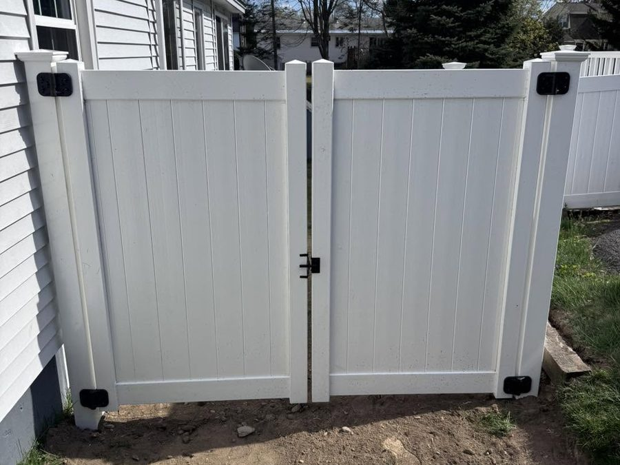
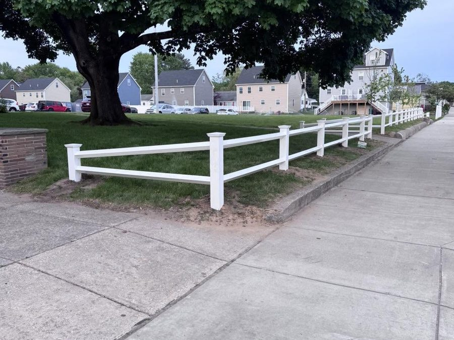
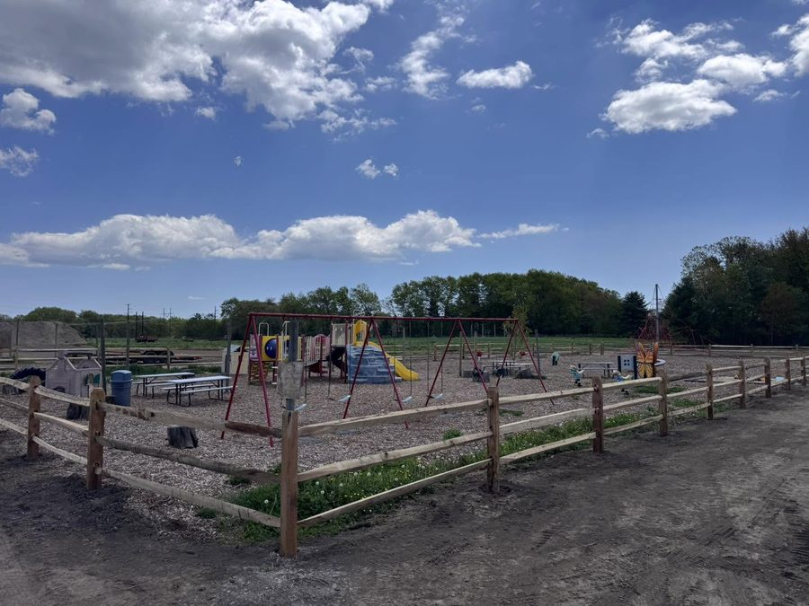
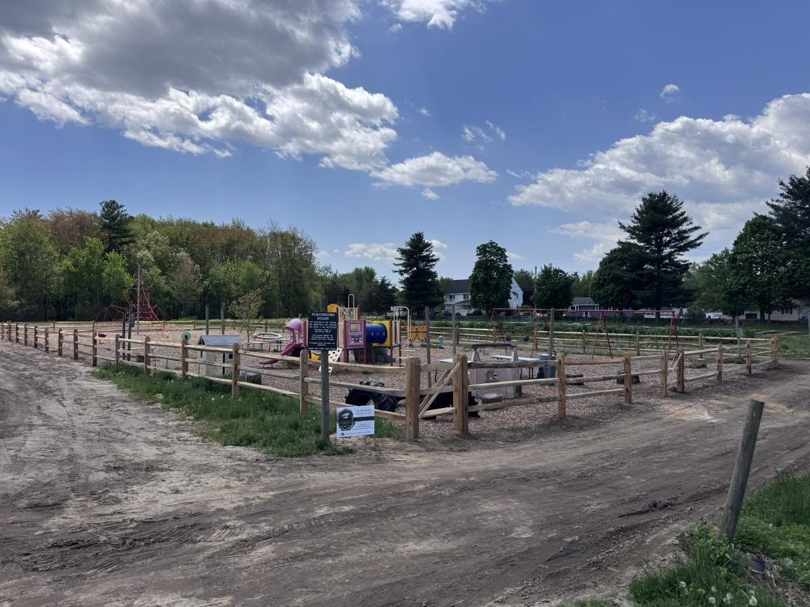

Property maintenance, fencing, hardscapes, and dumpster rental — quoted by Derek, built by our own crews with our own equipment. No subcontractors, no hand-offs, no rented gear: the company that quotes your job is the one that shows up.

From full-yard privacy to a clean post-and-rail along the road, we install the fence that fits the property, the budget, and the town's rules — and we set it to last through New England winters.

Winters, plows, and time are hard on fence lines. We repair what's worth saving — posts, rails, panels, gates — and tell you honestly when replacement is the smarter spend.

Fences are only as good as the ground they sit in. We build the retaining walls, grading, and base work that keep yards — and fence lines — exactly where they belong.

Tearing out a fence, a deck, or half the garage? We bring the dumpster, you fill it — or we do the tearing out too. It's the property-maintenance side of the shop: haul-offs, cleanouts, and the odd jobs in between, on your schedule.
Availability varies by season — call or text for current options.
Describe it in one text. Derek will tell you what it takes — and what it doesn’t.